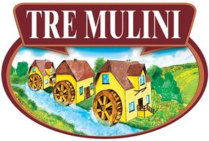

Trade Mark Journal No.2025/009 28 February 2025
WO0000001839358 (29,30)
Office of origin: Italy

The trademark consists of an imprint depicting the wording TRE MULINI in fancy characters, white in color, contained in a stylized quadrilateral cartouche with the upper corners rounded, brown in color with a light brown edge, which is partially overlapping on an oval with a double edge, respectively dark brown and light brown in color, inside which there are green and yellow cultivated fields in the background, dark green trees, light green undergrowth and in the foreground and middle ground there are three water-mills, yellow in color, with brown wheels and roofs and blue windows, a stream, blue in color, and more undergrowth, green in color.
The mark contains the colours white, brown, light brown, dark brown, green, yellow, dark green, light green and blue.
- Class 29
- Nut and seed-based snack bars; organic nut and seed-based snack bars; eggplant parmigiana; mashed potatoes; chicken patties; turkey patties; beef patties; vegetable-based spreads; fruits, dried; dried fruit mixes; onion rings; soup pastes; instant soup; vegetable soup preparations; pre-cooked soup; meat, fish, poultry and game; meat extracts; preserved, frozen, dried and cooked fruits and vegetables; jellies, jams, compotes; eggs; milk, cheese, butter, yogurt and other milk products;oils and fats for food.
- Class 30
- Pizzas; frozen pizzas; calzones; chocolate bars; muesli bars; cereal-based snack bars; filled chocolate bars; cereal bars; high-protein cereal bars; pancakes; batter for making crepes; cannelloni; tortellini; crackers; rice crackers; cheese-flavored biscuits; savory biscuits; croûtons; wheat flour; corn flour; rice flour; fresh pasta; wholemeal pasta; dried pasta; wholemeal bread; multigrain bread; fresh bread; rye bread; gnocchi; prepared meals consisting primarily of pasta; breadsticks; crispbread; hamburgers [sandwiches]; sandwiches; pasta-based prepared meals; potato-based piadinas; bread mixes; ravioli; risotto; noodles; sandwich wraps [bread]; pies; pizza crusts; cheeseburgers [sandwiches]; non-medicated confectionery containing chocolate; chocolate paste; chocolate desserts; breakfast cereals; cereal preparations; doughnuts; corn flakes; couscous; potato flour; spring rolls; lasagna; muesli; muesli desserts; Asian noodles; noodle-based prepared meals; paella; puff pastry; polenta; instant udon noodles; coffee, tea, cocoa and substitutes therefor; rice, pasta and noodles; tapioca and sago; flour and preparations made from cereals; bread, pastries and confectionery; chocolate; ice cream, sorbets and other edible ices; sugar, honey, treacle; yeast, baking-powder; salt, seasonings, spices, preserved herbs; vinegar, sauces and other condiments; ice for refreshment.
EUROSPIN ITALIA S.P.A.
Representative: Dr. Modiano & Associati SpA, Via Meravigli 16, I-20123 Milano, ITALY